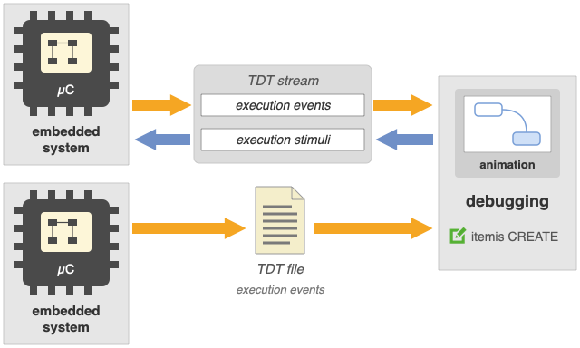
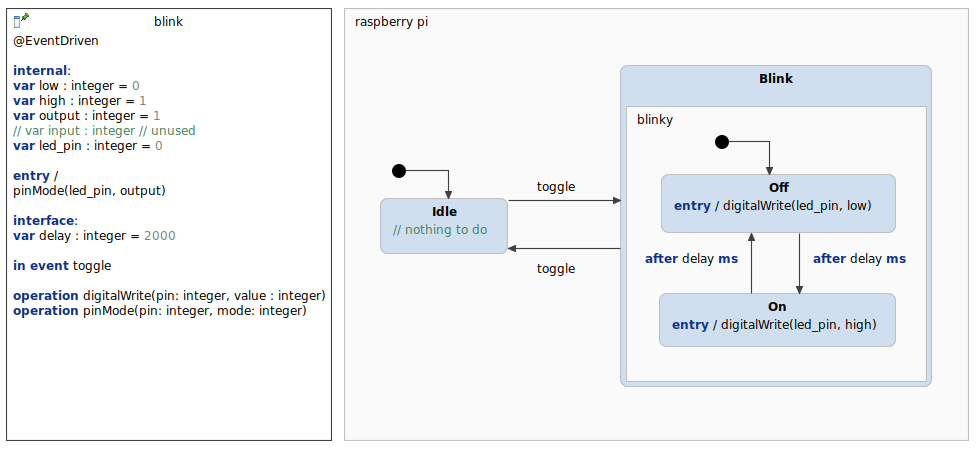
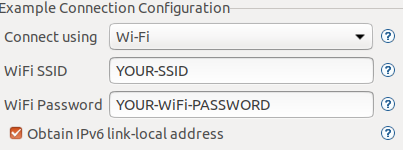
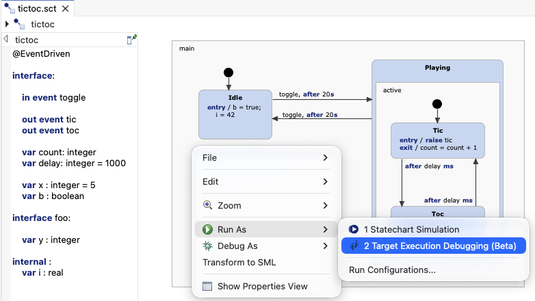

Target Debugging & Tracing (TDT) shows a state machine that runs on your target at model level: the target reports each execution step, and itemis CREATE shows the active states, the raised events and the variable values in the statechart diagram. While the target is connected, you can also raise events and change variables from the simulation view. This example debugs and traces a state machine running on an ESP32. Please refer to the TDT documentation for more information.

This is a simple blinky LED example, which uses two states. The user can switch between the Idle and Blink by setting the toggle event. Once the Blink state is active, the state machine toggles between the Off and On state. By setting the delay variable, the time for the after trigger can be changed.

This state machine is executed within an interactive application. This application can be used
from the command line. It reads user input from the standard input and writes to the standard output.
It is built to run on an ESP32. itemis CREATE runs on any other machine; both have to be in the same
local network. The state machine is generated with generic tracing from model/sm.sgen, its TDT
tracer with create::c::tdt from model/tdt.sgen.
The instructions contain detailed explanations of how to set up the environment, compile the program and flash the binary on the ESP32. It also shows how a terminal can be added. Your WiFi SSID and password must be set in the sdkconfig file.

If you're running the application via UDP you must set the IP of the machine, which runs itemis CREATE:#define SCT_IP "Add your IP here". The simplest way finding your ip address using ifconfing on linux or mac and ipconfing on windows. It should be something like 192.168.0.42
Choose Run As > Target Debugging & Tracing (Beta) from the context menu of model/blink.ysc in the statechart editor or the project explorer.

In its run configuration, choose Read trace from UDP socket on the tab Statechart Trace, with port 4444, which is the port the application sends to. While the ESP32 is connected, you can raise toggle and change delay from the simulation view.